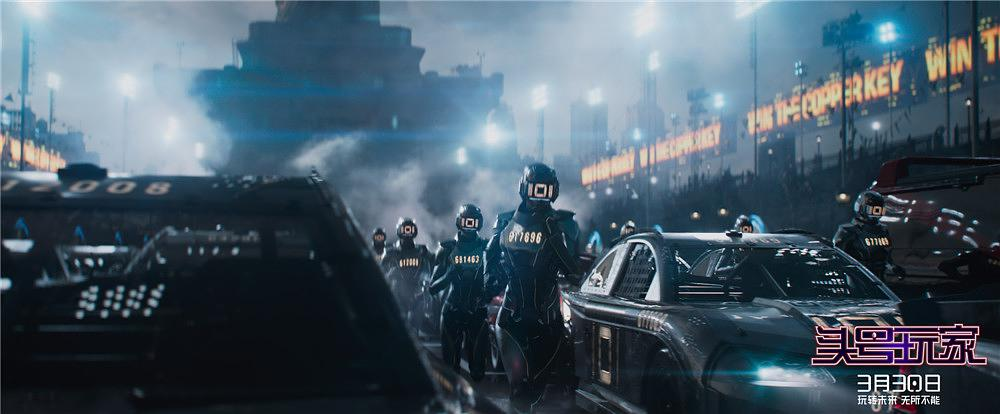

头号玩家

概况
导演: 史蒂文·斯皮尔伯格
编剧: 扎克·佩恩 / 恩斯特·克莱恩
主演: 泰尔·谢里丹 / 奥利维亚·库克 / 西蒙·佩吉 / 本·门德尔森 / 马克·里朗斯 / T·J·米勒 /
汉娜·乔恩·卡门 / 莱蒂希娅·赖特 / 拉尔夫·伊内森 / 赵家正 / 森崎温 / 丽娜·维特 / 更多...
类型: 动作 / 科幻 / 冒险
制片国家/地区: 美国
语言: 英语
上映日期: 2018-03-30
片长: 140分钟
剧情简介
2045年，处于混乱和崩溃边缘的现实世界令人失望，人们将救赎的希望寄托于“绿洲”，
一个由鬼才詹姆斯·哈利迪（马克·里朗斯饰）一手打造的虚拟游戏宇宙。
人们只要戴上VR设备，就可以进入这个与现实形成强烈反差的虚拟世界。
在这个世界中，有繁华的都市，形象各异、光彩照人的玩家，
而不同次元的影视游戏中的经典角色也可以在这里齐聚。就算你在现实中是一个挣扎在社会边缘的失败者，
在“绿洲”里也依然可以成为超级英雄，再遥远的梦想都变得触手可及。哈利迪弥留之际，
宣布将巨额财产和“绿洲”的所有权留给第一个闯过三道谜题，
找出他在游戏中藏匿彩蛋的人，自此引发了一场全世界范围内的竞争。